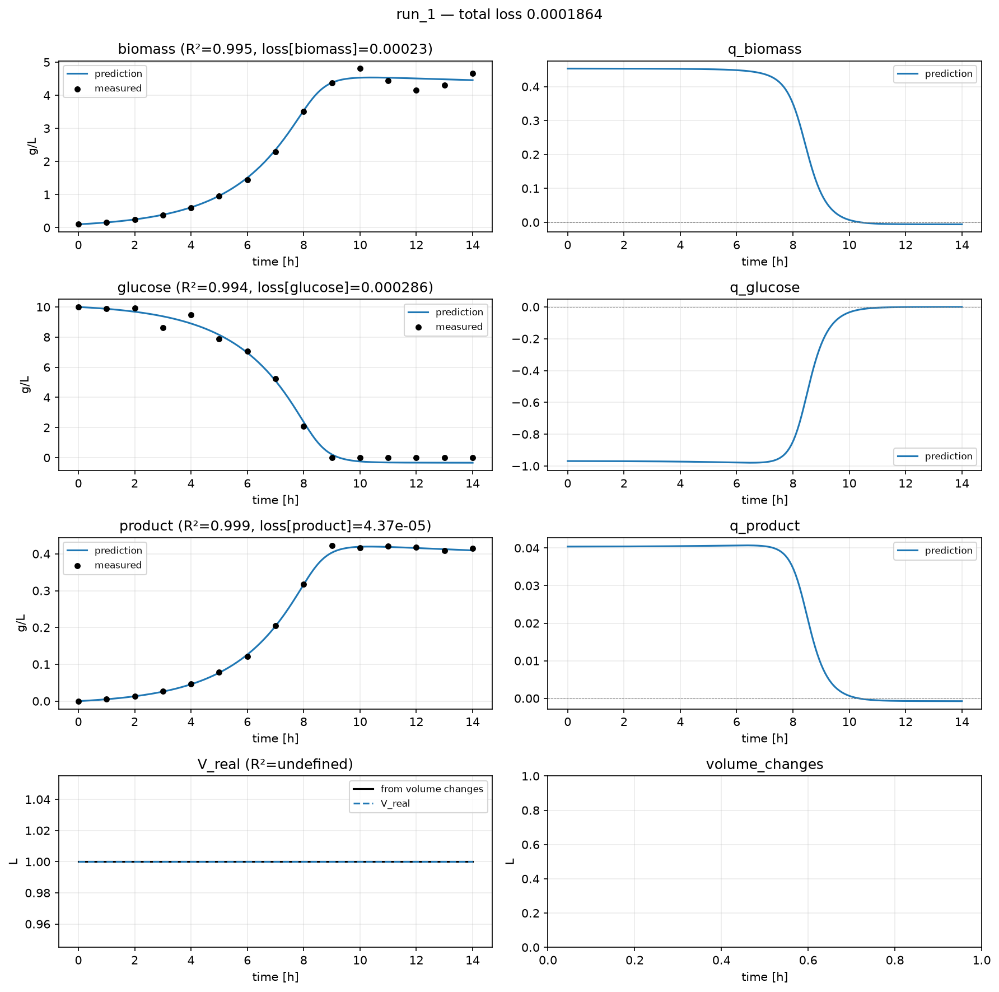

4. Custom Models¶
Replace the two defaults that matter most (the network that predicts rates, and the scaling) and measure what it bought you.
Everything you customise in hybrax.train lives in one optional file, custom.py. hybrax.train
looks in it for functions with specific names; anything it does not find falls back to a
default. There is no registration and no base class to inherit for the file itself: it
is just a module.
First: SCL and RAW¶
You cannot write a reaction module without this, and it is where nearly everyone’s first attempt goes wrong.
RAW is physical units: g/L, litres, hours.
SCL is scaled space, where every axis is roughly 1.
The ODE is integrated in SCL. A state vector holding biomass (~5), glucose (~10) and cumulative feed (~0.001) is badly conditioned; gradients through the solve are dominated by whichever axis happens to be largest. Dividing each axis by a characteristic magnitude fixes that, and because the scaling is linear the same factor converts a value and its time derivative, so one number per axis handles both states and rates.
The double-scaling trap
Your network reads inputs.SCL_* (already-scaled values) so whatever it emits is
already in SCL space. Return it directly.
If you additionally call a scale_* helper on the output, it cancels against the
wrapper’s unscale step on the way back to physical units, and your rates end up off by
the scale factor. Both conventions appear in the shipped examples depending on what the
network is defined to emit, which is exactly why this catches people. Rule of thumb: if
the input was SCL, the output is SCL.
The file¶
1"""Tutorial 4: a reaction module and scale estimation for demo_batch.
2
3Two hooks, nothing else. Everything not defined here keeps its default.
4"""
5
6import equinox as eqx
7import jax
8import jax.numpy as jnp
9import numpy as np
10
11from hybrax.train import (
12 EstimatedScales,
13 ReactionInputs,
14 ReactionOutputs,
15 UserReactionModule,
16 trainable_field,
17)
18
19
20# --------------------------------------------------------------------------
21# 1. The reaction module: modeled state -> specific rates
22# --------------------------------------------------------------------------
23class BatchReactionModule(UserReactionModule):
24 """One MLP mapping the modeled state to the three specific rates."""
25
26 # `trainable_field()` is what makes these weights visible to the optimizer.
27 # Untagged array leaves default to FROZEN.
28 mlp: eqx.nn.MLP = trainable_field()
29
30 def __init__(self, *, key, **scale_kwargs):
31 # The base class stores every SCALE_* axis; always forward them.
32 super().__init__(**scale_kwargs)
33 self.mlp = eqx.nn.MLP(
34 in_size=self.n_modeled_RMCs, # biomass, glucose, product
35 out_size=self.n_modeled_BiologicalOde_rates, # q_biomass, q_glucose,
36 # q_product
37 width_size=32,
38 depth=3,
39 # Use a SMOOTH activation. eqx.nn.MLP defaults to relu, which makes
40 # the predicted rates piecewise linear: kinks the solver has to
41 # chase, and a derivative that jumps. tanh is what the built-in
42 # default module uses, for the same reason.
43 activation=jax.nn.tanh,
44 key=key,
45 )
46
47 def __call__(self, t, inputs: ReactionInputs) -> ReactionOutputs:
48 del t # this model has no explicit time dependence
49 # The network reads SCL inputs, so its output is ALREADY in SCL space.
50 # Emit it directly: do not re-apply scale_*, or it cancels on the
51 # wrapper's unscale round trip. See the note in the tutorial text.
52 return ReactionOutputs(
53 SCL_modeled_BiologicalOde_rates=self.mlp(inputs.SCL_modeled_RMCs),
54 # demo_batch has no modeled feeds, but the field is still required.
55 SCL_modeled_Outflows_rates=jnp.zeros(0),
56 SCL_modeled_Inflows_rates=jnp.zeros(0),
57 )
58
59
60def build_reaction_module(*, seed, **kwargs):
61 scale_kwargs = {k: v for k, v in kwargs.items() if k.startswith("SCALE_")}
62 return BatchReactionModule(key=jax.random.key(seed), **scale_kwargs)
63
64
65# --------------------------------------------------------------------------
66# 2. Scale estimation: make every axis O(1)
67# --------------------------------------------------------------------------
68def estimate_all_scales(runtime_data, target_names, config):
69 del target_names, config
70 rhs = runtime_data.rhs_ode
71 n_processes = len(runtime_data.process_order)
72
73 # A state scale is just "how big does this species get, anywhere in the data".
74 def max_abs_state(name):
75 best = 0.0
76 for i in range(n_processes):
77 _, values = runtime_data.raw_state_trace(i, name)
78 if values.size:
79 best = max(best, float(np.max(np.abs(values))))
80 return max(best, 1e-6) # floor: never divide by zero
81
82 rmc_scale = {name: max_abs_state(name) for name in rhs.name_modeled_RMCs}
83
84 # Rate scales are estimated from the data too. The average specific rate of a
85 # species is its total change divided by the integrated biomass exposure,
86 # which is exactly what "specific" means. Do NOT use max(biomass): biomass
87 # grows by two orders of magnitude over a batch, so dividing by its peak
88 # underestimates the rate several-fold.
89 def rate_scale_for(species):
90 per_process = []
91 for i in range(n_processes):
92 c_times, c_values = runtime_data.raw_state_trace(i, species)
93 x_times, x_values = runtime_data.raw_state_trace(i, "biomass")
94 exposure = np.trapezoid(x_values, x_times)
95 per_process.append(abs(c_values[-1] - c_values[0]) / max(exposure, 1e-9))
96 return max(max(per_process), 1e-9)
97
98 rate_scale = [rate_scale_for(name[2:]) for name in rhs.name_modeled_rates]
99
100 empty = jnp.zeros(0) # demo_batch has no feeds and no process variables
101 return EstimatedScales(
102 SCALE_modeled_RMCs=jnp.asarray([rmc_scale[n] for n in rhs.name_modeled_RMCs]),
103 SCALE_modeled_BiologicalOde_rates=jnp.asarray(rate_scale),
104 SCALE_V_in_cumulative=jnp.asarray(
105 max(runtime_data.initial_volume(i) for i in range(n_processes))
106 ),
107 SCALE_modeled_Inflows_cumulative=empty,
108 SCALE_modeled_Inflows_rates=empty,
109 SCALE_modeled_Outflows_cumulative=empty,
110 SCALE_modeled_Outflows_rates=empty,
111 SCALE_controlled_Inflows_cumulative=empty,
112 SCALE_controlled_Inflows_rates=empty,
113 SCALE_controlled_Outflows_cumulative=empty,
114 SCALE_controlled_Outflows_rates=empty,
115 SCALE_controlled_PVs=empty,
116 SCALE_controlled_Inflows_Cin=jnp.maximum(
117 jnp.abs(jnp.asarray(rhs.Cin_controlled_Inflows)), 1.0
118 ),
119 SCALE_modeled_Inflows_Cin=jnp.maximum(
120 jnp.abs(jnp.asarray(rhs.Cin_modeled_Inflows)), 1.0
121 ),
122 )
Three things to notice.
trainable_field() is what exposes the MLP weights to the optimizer. This is the
whole partitioning mechanism: tagged fields are trainable, and untagged array leaves
default to frozen. There is no separate partition function to write.
super().__init__(**scale_kwargs) must be called. The reaction module is the single
source of truth for every scale in hybrax.train (the wrapper, the trainer and the loss
module all read them off it) so the base class needs them.
SCL_modeled_Inflows_rates=jnp.zeros(0) and SCL_modeled_Outflows_rates=jnp.zeros(0)
are required even though demo_batch has no modeled feeds or outflows. ReactionOutputs
has no default for either; omitting one is a TypeError at the first solve, not at import.
What estimate_all_scales is actually doing¶
State scales are easy: how big does this species get. Rate scales need one step of
thought. The module emits an O(1) number; that number is multiplied by the rate scale to
become a physical rate. You want the resulting state change over the run to be about
the size of the state. For a specific rate, d(c)/dt = q_c · biomass, so
scale(q_c) ~ scale(c) / (scale(biomass) · duration)
which is the one line in the middle of the hook. Get this wrong in the optimistic direction and the concentrations blow up on the first solve, before any training happens.
Train it¶
Point the config at the file: one extra key:
{
"data": { "prepared": "prepared" },
"custom_py": "custom.py",
"train": { "epochs": 300, "seed": 0, "learning_rate": 0.01 },
"output": { "dir": "run_custom" }
}
The learning rate is ten times the default’s. That is deliberate, and the point of the
comparison below: it is only safe to raise it because the state is scaled. Try the same
learning rate on the unscaled defaults and the solve diverges to inf within the first
few steps: conditioning is not a nice-to-have, it is what lets you use a normal
optimizer setting at all.
Did it help?¶
Same data, same seed, same epoch budget. Two things differ: this custom.py, and the
learning rate it makes safe to use.
Loss values are not the fair comparison here: the default run’s loss lives in raw g/L, the scaled run’s in relative units, and those are not the same number. The fair, scale-free comparison is R² in physical space, computed by re-interpolating each run’s predictions back onto the actual measurement times:
run directories: ./source/_data/out/runs/tutorial_04/run_default and ./source/_data/out/runs/tutorial_04/run_custom
both self-contained: cp -r either one anywhere and keep working from the copy
target defaults custom.py
biomass 0.9883 0.9962
glucose 0.9934 0.9963
product 0.9585 0.9987
Biomass and glucose are close either way (this dataset is small enough that the defaults already fit them well. Product is where the two diverge. It is the smallest-magnitude target (peaking around 0.5 g/L against glucose’s 10 g/L), and with no scaling the loss is implicitly dominated by whichever axis has the largest raw magnitude) glucose. Product’s error barely moves the unscaled loss, so the optimizer has little reason to fit it well. Once every axis is normalised to O(1), each target pulls equally, and product stops being the one that got left behind.
That is the actual argument for scaling: not “converges faster” in general, but “every target gets a fair share of the gradient”, which matters most for whichever quantity in your dataset happens to be smallest.

Check what is actually being trained¶
Before a long run, confirm the optimizer sees what you think it does. A field you forgot to tag is silently frozen and will simply never move.
+--------------------------- UserReactionModule Structure ---------------------------+
| name | shape | status |
+------------------------------------------------------------------------------------+
| rhs_ode.Cin_controlled_Inflows | (0, 3) | frozen |
| rhs_ode.Cin_modeled_Inflows | (0, 3) | frozen |
| rhs_ode.retention_controlled_Outflows | (0, 3) | frozen |
| rhs_ode.retention_modeled_Outflows | (0, 3) | frozen |
| reaction_module.SCALE_modeled_RMCs.scale | (3,) | frozen |
| reaction_module.SCALE_modeled_PVs.scale | (0,) | frozen |
| reaction_module.SCALE_V_in_cumulative.scale | () | frozen |
| reaction_module.SCALE_modeled_Inflows_cumulative.scale | (0,) | frozen |
| reaction_module.SCALE_modeled_Outflows_cumulative.scale | (0,) | frozen |
| reaction_module.SCALE_controlled_Inflows_cumulative.scale | (0,) | frozen |
| reaction_module.SCALE_controlled_Inflows_rates.scale | (0,) | frozen |
| reaction_module.SCALE_controlled_Inflows_Cin.scale | (0, 3) | frozen |
| reaction_module.SCALE_controlled_Outflows_cumulative.scale | (0,) | frozen |
| reaction_module.SCALE_controlled_Outflows_rates.scale | (0,) | frozen |
| reaction_module.SCALE_controlled_PVs.scale | (0,) | frozen |
| reaction_module.SCALE_modeled_Inflows_Cin.scale | (0, 3) | frozen |
| reaction_module.SCALE_modeled_BiologicalOde_rates.scale | (3,) | frozen |
| reaction_module.SCALE_modeled_Inflows_rates.scale | (0,) | frozen |
| reaction_module.SCALE_modeled_Outflows_rates.scale | (0,) | frozen |
| reaction_module.SCALE_latent.scale | (0,) | frozen |
| reaction_module.mlp.layers[0].weight | (32, 3) | trainable |
| reaction_module.mlp.layers[0].bias | (32,) | trainable |
| reaction_module.mlp.layers[1].weight | (32, 32) | trainable |
| reaction_module.mlp.layers[1].bias | (32,) | trainable |
| reaction_module.mlp.layers[2].weight | (32, 32) | trainable |
| reaction_module.mlp.layers[2].bias | (32,) | trainable |
| reaction_module.mlp.layers[3].weight | (3, 32) | trainable |
| reaction_module.mlp.layers[3].bias | (3,) | trainable |
| controls.spline_breaks | (0,) | frozen |
| controls.spline_coeffs | (0, 0, 4) | frozen |
| controls.linear_grid | (2,) | frozen |
| controls.control_values | (2, 0) | frozen |
| controls.control_derivatives | (2, 0) | frozen |
| controls.jump_ts | (0,) | frozen |
| controls.min_V | () | frozen |
| controls.sample_event_times | (0,) | frozen |
| controls.sample_event_volumes | (0,) | frozen |
| controls.sample_event_mask | (0,) | frozen |
| controls.bolus_event_times | (0,) | frozen |
| controls.bolus_event_volumes | (0,) | frozen |
| controls.bolus_event_Cin | (0, 3) | frozen |
| controls.bolus_event_mask | (0,) | frozen |
| target_state_indices | (3,) | frozen |
+------------------------------------------------------------------------------------+
The other half of that question (which array index is which species) has its own printer, and it is the fastest way to stop guessing at slicing:
+---------------------------- ReactionInputs Schema ----------------------------+
| axis | shape | names |
+-------------------------------------------------------------------------------+
| SCL_modeled_RMCs | (3,) | biomass, glucose, product |
| SCL_modeled_PVs | (0,) | |
| SCL_modeled_V | () | V_real |
| SCL_modeled_Inflows_cumulative | (0,) | |
| SCL_modeled_Outflows_cumulative | (0,) | |
| SCL_controlled_Inflows_cumulative | (0,) | |
| SCL_controlled_Inflows_rates | (0,) | |
| SCL_controlled_Inflows_Cin | (0, 3) | rows: |
| | | cols: biomass, glucose, product |
| SCL_controlled_Outflows_cumulative | (0,) | |
| SCL_controlled_Outflows_rates | (0,) | |
| RAW_controlled_Outflows_retention | (0, 3) | rows: |
| | | cols: biomass, glucose, product |
| RAW_modeled_Outflows_retention | (0, 3) | rows: |
| | | cols: biomass, glucose, product |
| SCL_controlled_PVs | (0,) | |
| SCL_modeled_Inflows_Cin | (0, 3) | rows: |
| | | cols: biomass, glucose, product |
+-------------------------------------------------------------------------------+
+------------------------- ReactionOutputs Schema --------------------------+
| axis | shape | names |
+---------------------------------------------------------------------------+
| SCL_modeled_BiologicalOde_rates | (3,) | q_biomass, q_glucose, q_product |
| SCL_modeled_Inflows_rates | (0,) | |
| SCL_modeled_Outflows_rates | (0,) | |
+---------------------------------------------------------------------------+
That is where in_size=self.n_modeled_RMCs and out_size=self.n_modeled_BiologicalOde_rates
came from, and it confirms the output order is q_biomass, q_glucose, q_product.
A misspelled hook name is silent
hybrax looks up hooks by name with a plain attribute lookup. build_reaction_modul
(one letter short) is not an error: it is a silent fall back to the default MLP, and
your carefully written module never runs. If a change to custom.py seems to have had no
effect, check the spelling first. See
Silent failures.
What you learned¶
custom.pyis plain Python; hooks are found by name, and missing ones use defaults.The ODE is integrated in SCL space; if your input was SCL, your output is SCL.
trainable_field()opts a field in; everything untagged is frozen.Scaling is optional, has no error when omitted, and buys you two things: an optimizer setting that would otherwise diverge, and a loss where your smallest-magnitude target isn’t drowned out by your largest.
Compare runs by R² in physical space, not by raw loss: an unscaled and a scaled run don’t share loss units.
What’s next¶
You can run the full tutorial at examples/tutorial_04_your_first_custom_py/run.py.
Tutorial 5: use the trained model.
Real kinetics instead of a bare MLP: Gallery: mechanistic models.
Every hook, with signatures: Customization.
More on scales: Scaling.